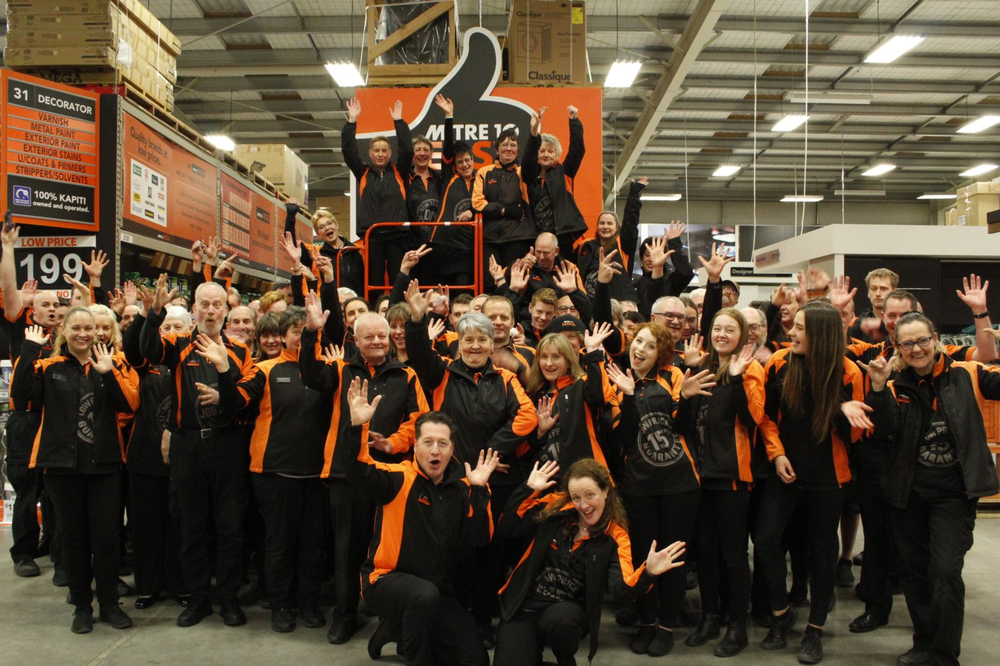

About Us
A major New Zealand chain of home improvement stores established in June 1974. It sells a range of household hardware, building supplies, heaters, air conditioners, garden products, barbeques and camping gear.
A major New Zealand chain of home improvement stores established in June 1974. It sells a range of household hardware, building supplies, heaters, air conditioners, garden products, barbeques and camping gear.
 Household Hardware
Household Hardware Building Supplies
Building Supplies Heaters
Heaters Air Conditioners
Air Conditioners Garden Products
Garden Products Barbeques
Barbeques Camping Gear
Camping GearSince 1974 Mitre 10 has helped Kiwis improve their homes. We’re trusted to do this, and that’s a real privilege. That’s why we have locally owned and operated stores in all corners of the country and a team of over 5000 who are dedicated to helping Kiwis turn their home improvement dreams into reality.
As the biggest home improvement retailer, and a trade partner of choice, life at Mitre 10 is fast paced and offers huge scope.